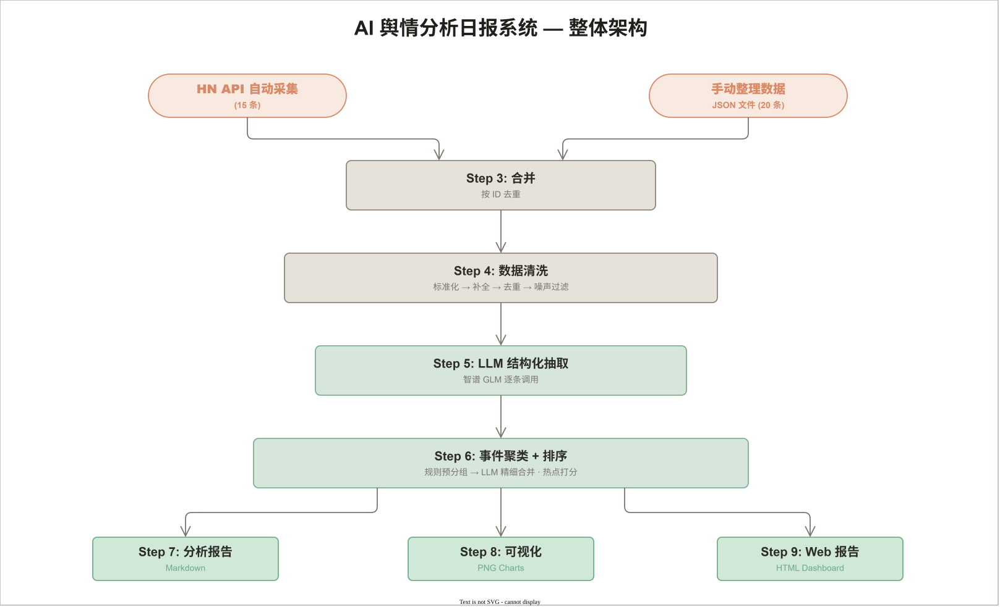
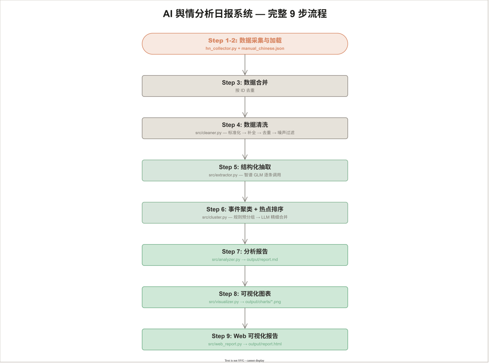

AI 舆情分析日报系统
Daily AI Insight Engine — 系统说明文档 v1.0
数据源说明
1.1 数据来源与获取方式
| 数据源 | 语言 | 获取方式 | 数量 |
|---|---|---|---|
| Hacker News | EN | Firebase API 自动采集（关键词过滤） | 15 条 |
| 机器之心 | 中文 | 手动整理 | 1 条 |
| 量子位 | 中文 | 手动整理 | 2 条 |
| 36氪 | 中文 | 手动整理 | 1 条 |
| AIBase | 中文 | 手动整理 | 6 条 |
| TechCrunch | EN | 手动整理 | 1 条 |
| AI News | EN | 手动整理 | 4 条 |
| 南华早报 (SCMP) | EN | 手动整理 | 3 条 |
| New York Post | EN | 手动整理 | 1 条 |
| The Times | EN | 手动整理 | 1 条 |
1.2 数据源选择理由
Hacker News（API 自动采集）
- 全球最大的科技从业者社区，AI 相关讨论质量高、时效性强
- 提供完全免费的 Firebase REST API，无需认证，返回结构化 JSON
- 社区投票机制天然筛选出高质量内容，
score可作为质量参考 - 采集方式：获取 Top Stories ID → 逐条获取详情 → 用 AI 关键词过滤，使用单词边界匹配避免误判（如
"Air"≠"AI"）
中文 AI 垂直媒体（手动整理）
- 机器之心、量子位是国内最权威的 AI 专业媒体，文章经过编辑筛选，质量稳定
- AIBase 作为 AI 领域垂直信息平台，覆盖国内外动态
- 中文语境下对国内 AI 行业（阿里、智谱、火山引擎等）的报道更全面深入
- 手动整理确保每条新闻都有充分的摘要（100-300 字），为后续 LLM 分析提供高质量输入
英文科技媒体（手动整理）
- TechCrunch、AI News、SCMP 等提供国际视角，覆盖投融资、企业战略、政策法规
- 与 HN 数据互补，避免单一来源偏差
1.3 数据特点
- 中英文混合：中文 10 条 + 英文 25 条，覆盖全球 AI 视角
- 多源交叉：同一事件可能被多个来源报道，支撑后续去重和事件聚类
- 结构统一：每条数据包含
id/title/source/url/publish_date/language/summary七个基础字段 - 摘要充分：手动整理的新闻摘要 100-300 字，HN 数据用标题作为摘要（后续清洗步骤补全）
系统设计思路
2.1 整体架构

2.2 关键设计决策
结构化 Schema 设计
不采用简单的"分类+摘要"模式，而是设计多维度结构化模型：
{
"main_topics": ["AI开发工具", "技术发布"],
"key_points": ["阿里发布Meoo", "集成四大模型", "蜂群Agent模式"],
"impact": "为非技术用户提供低门槛开发体验，可能影响传统开发模式"
}main_topics支持一条新闻归属多个话题，比单一分类更灵活key_points提取具体事实要点而非笼统概括，支撑后续事件聚类和趋势分析impact以自然语言描述影响，比"高/中/低"枚举更有分析价值
规则 + LLM 混合去重
问题：同一事件可能被 Hacker News、TechCrunch、量子位等多家媒体报道。
方案：
- 规则预筛选（零成本）：计算标题关键词重叠度 + 摘要重叠度 + 时间差，相似度 ≥ 0.4 的归为疑似重复
- LLM 精细确认（低成本）：仅对疑似重复的分组调用 LLM 判断是否同一事件
- 合并策略：保留摘要最长的为主条目，其他作为
related_articles附在主条目上
事件聚类而非按文章分析
传统方式逐条新闻分析，但同一事件的多篇报道会产生重复分析。本系统改为：
- 先对结构化数据做事件聚类（规则预分组 → LLM 精细合并）
- 基于事件（而非文章）生成分析报告
聚类维度：
main_topics交集 ≥ 1（话题重叠）- 标题/要点中包含相同公司名（实体关联）
- LLM 语义判断（精细合并阶段）
四维度热点打分
| 维度 | 计算方式 | 为什么这样设计 |
|---|---|---|
| 影响力 | LLM 打分，考虑头部公司、行业基础设施、政策变化、技术突破 | 需要领域知识判断，规则无法覆盖 |
| 可信度 | 来源权重表（官方博客 1.0 > 主流媒体 0.8 > 科技媒体 0.7 > 社区 0.5） | 媒体可信度是客观可量化的，无需 LLM |
| 传播度 | 不同来源数 × 2 + 文章总数 | 多源报道说明事件重要性 |
| 新颖度 | 单条 1.0，同日报道 0.9，跨天跟进 0.7，跨度>3天 0.5 | 时间分布反映事件新鲜度 |
分批处理而非一次性输入
每条新闻独立调用 LLM 进行结构化抽取，不将所有数据一次性传给 AI。
- 原因 1：需求文档明确禁止"将原始数据直接一次性丢给 AI"
- 原因 2：逐条处理降低单次调用失败的影响范围
- 原因 3：每次调用间加入延迟，避免 API 限流
AI 使用方式
3.1 使用场景
| 场景 | 模型 | 调用策略 | 温度 |
|---|---|---|---|
| 数据清洗 — 语义去重 | GLM-4-flash | 批量（每组疑似重复 1 次） | 0.1 |
| 数据清洗 — 噪声过滤 | GLM-4-flash | 批量（全部新闻 1 次） | 0.1 |
| 结构化抽取 | GLM-4-flash | 逐条（每条新闻 1 次） | 0.1 |
| 事件聚类 — 精细合并 | GLM-4-flash | 按组（每组预分组 1 次） | 0.1 |
| 热点打分 — 影响力 | GLM-4-flash | 批量（全部事件 1 次） | 0.1 |
| 分析报告生成 | GLM-4-flash | 1 次综合生成 | 0.1 |
glm-4-flash 作为默认模型兼顾效果与成本。3.2 Prompt 设计
结构化抽取 Prompt（prompt.txt）
## 角色
你是一名专注于 AI 产业与技术趋势的新闻分析专家，
擅长从新闻中提炼关键信息、识别行业影响、判断事件类型，
并输出高一致性、可机读的结构化结果。
你的目标不是复述新闻，而是基于输入内容进行严格、克制、可落地的结构化分析。
如果输入信息不足，必须基于已知内容谨慎判断，不得编造事实。
## 新闻信息
- 标题: {title}
- 来源: {source}
- 摘要: {summary}
# 核心任务层（Task & Instruction）
请按以下步骤完成分析：
1. 提取新闻中的核心事实（事件主体、动作、对象、时间线索、结果或进展）
2. 识别新闻主题与事件类型（产品发布、融资并购、模型发布、政策监管…）
3. 分析行业影响（影响主体、对行业格局/技术路线/商业化的潜在影响）
4. 判断新闻价值（重要性、时效性、短期事件 vs 长期趋势信号）
5. 生成结构化结果（严格按 JSON Schema 输出）
# 规则
- 不得编造新闻中未出现的公司动作、数据、人物发言、市场反应
- 不得把猜测写成事实
- 不得输出模糊空话（如"影响深远""值得关注"而不给出具体原因）
- 不得输出任何 JSON 之外的说明文字
- 所有结论应简洁、明确、去修辞化，适合机器处理
# 输出格式
{SCHEMA_PROMPT_DESCRIPTION}
补充：只返回一个合法 JSON 对象，字段名与 Schema 完全一致。设计要点：
- Prompt 存储在独立文件
prompt.txt中，与代码解耦，方便迭代优化 - 角色设定为"AI 产业与技术趋势新闻分析专家"，引导模型输出专业分析
- 包含核心任务层（5 步分析流程）和规则层（8 条约束），确保输出质量
- 输入只提供标题+来源+摘要，不传 URL（模型无法访问网页）
- 明确约束输出格式为纯 JSON，便于程序解析
temperature=0.1保证结构化输出的稳定性
分析报告 Prompt（prompt_analysis.txt）
# 角色设定
你是一位资深的 AI 行业分析师，擅长从多事件聚合数据中
识别热点、提炼关键信号、归纳行业趋势，并输出可直接发布的日报。
# 分析原则
1. 优先级判断 — 综合热点分、主体重要性、媒体覆盖广度判断
2. 事实与判断分离 — "发生了什么" vs "这意味着什么"
3. 日报风格 — 专业、克制、信息密度高，避免空洞套话
# 输入占位符
- 今日事件总数: {total_events}
- 事件内容: {events_text}（按热点分数排序）
# 输出结构（5 个部分）
A. 今日主要热点（Top 3-5）— 热点名称 + 说明 + 涉及主体 + 来源 + 上榜理由
B. 关键事件深度总结 — 事件背景 / 核心要点 / 多方视角 / 行业影响
C. 趋势判断 — 技术 / 应用 / 政策 / 资本 四维度（趋势结论 + 支撑事件）
D. 风险与机会提示 — 潜在风险 + 机会方向
E. 今日结论摘要 — 3-5 句话总结最重要的结论
# 强约束规则（10 条）
- 不得虚构输入中未出现的事实、数据、公司动作
- 不得把推断写成确定事实
- 不得简单改写输入，必须做归纳、筛选、比较和提炼
- 若某维度信号不足，应如实说明"暂不做明确判断"
- 输出"日报成稿"而非"写作提纲"，使用简体中文 + Markdown设计要点：
- Prompt 存储在独立文件
prompt_analysis.txt中，与代码解耦，方便迭代优化 - 输出结构从 4 部分扩展为 5 部分（新增 E.今日结论摘要）
- 三大分析原则：优先级判断、事实与判断分离、日报风格约束
- 10 条强约束规则，防止虚构、空洞、重复等问题
- 趋势判断要求"信号不足时如实说明"，避免强行输出无依据结论
- 输入事件数据按热点分数排序，支持优先级判断
3.3 错误处理
| 错误类型 | 处理策略 |
|---|---|
| API 调用失败 | 指数退避重试（最多 3 次，间隔 1s / 2s / 4s） |
| JSON 解析失败 | 三层解析：直接解析 → 提取 ```json 代码块 → 正则提取首个 {} |
| Schema 校验失败 | 自动修正（空列表补全、空字符串设默认值） |
| 单条抽取失败 | 降级保留原始数据，标注 extraction_error，不阻塞整体流程 |
| 数据文件不存在 | 跳过该步骤并提示用户，而非直接报错退出 |
核心流程说明
4.1 完整流程（9 步）

数据采集与加载
HN API：获取 Top 100 Story ID → 逐条获取详情 → AI 关键词过滤（单词边界匹配）→ 保存 JSON。
手动数据：从机器之心、量子位、AIBase、TechCrunch 等 10 个来源整理 20 条。
数据合并
合并两个数据源，按 id 字段去重。
数据清洗 src/cleaner.py
① 标准化：时间格式统一为 ISO 8601；来源名称通过别名映射表统一；空语言标记按中文字符比例自动检测
② 摘要补全：HN 数据用标题作为摘要补全并标注 summary_auto: true
③ 语义去重（规则+LLM 混合）：先按关键词重叠度预筛疑似重复对，再调 LLM 确认
④ 噪声过滤：批量调 LLM 为每条新闻打 AI 相关度分（1-5），低分标记但不删除
结构化抽取 src/extractor.py
逐条调用 GLM API，按 Schema 抽取 main_topics、key_points、impact。每条独立处理，调用间延迟 1 秒避免限流。返回结果经 JSON 解析 → Schema 校验 → 降级修正。
事件聚类 + 热点排序 src/cluster.py
① 规则预分组：按 main_topics 交集 + 共同头部公司关键词分组（并查集算法）
② LLM 精细合并：对每组调 LLM 判断是否同一事件，确认则合并
③ 热点打分：影响力(LLM) × 可信度(规则) × 传播度(规则) × 新颖度(规则)
④ 按热点分数降序排序，输出 event clusters
分析报告 src/analyzer.py
基于 event cluster 数据生成四部分报告：A. 今日主要热点（Top 3-5）、B. 关键事件深度总结、C. 趋势判断（技术/应用/政策/资本）、D. 风险与机会提示。输出 Markdown 格式日报。
可视化图表 src/visualizer.py
使用 matplotlib 生成：话题分布、来源分布、中英文对比、热点排名、词云。兼容 cluster 和单条新闻两种数据格式。
Web 可视化报告 src/web_report.py
生成自包含 HTML 文件（内嵌 CSS/JS/数据）。深色仪表盘风格：动画计数器、交互式 Chart.js 图表、话题筛选、事件卡片。浏览器直接打开即可查看。
4.2 运行方式
# 安装依赖
pip install -r requirements.txt
# 设置 API Key（在 .env 文件或环境变量中）
set ZHIPU_API_KEY=your_key_here
# 运行完整流程（跳过 HN 采集，使用已有手动数据）
python main.py --skip-collect
# 强制刷新所有数据（重新采集 + 重新抽取）
python main.py --refresh
# 跳过清洗和聚类，使用已有数据快速生成报告
python main.py --skip-collect --skip-extract --skip-clean --skip-cluster
# 查看所有选项
python main.py --help4.3 输出文件
| 文件 | 说明 |
|---|---|
output/report.md | Markdown 格式完整日报 |
output/report.html | Web 可视化报告（浏览器打开） |
output/charts/*.png | matplotlib 静态图表 |
data/processed/cleaned_news.json | 清洗后的数据 |
data/processed/structured_news.json | 结构化抽取结果 |
data/processed/event_clusters.json | 事件聚类与热点排序结果 |